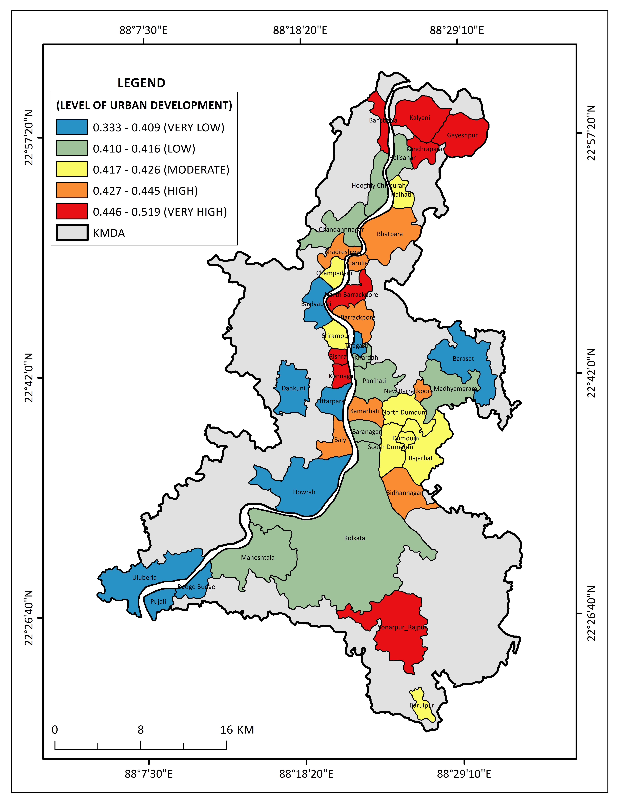

Table of Contents

URBAN DEVELOPMENT LEVELS IN KMDA (CRITIC–VIKOR MCDM MODEL)
This geospatial assessment stratifies urban local bodies across the Kolkata Metropolitan Area (KMDA) into five development tiers based on household amenities, housing conditions, and demographic indices:
Key Insights:
Peripheral Growth Hubs (Very High): Kalyani, Gayeshpur, Kanchrapara, and Sonarpur-Rajpur lead the index, driven by planned residential expansion and modernized civic amenities.
Riverine Industrial Corridors (High): Bhatpara, Barrackpore, and Rishra sustain elevated scores along the Hooghly River due to dense transport connectivity and commercial utility networks.
Transitional Urban Belts (Moderate to High): Bidhannagar, Rajarhat, and the Dum Dum cluster represent dynamic growth corridors marked by rapid real estate and commercial development.
Infrastructural Deficit Zones (Very Low): Western and peripheral nodes—including Howrah, Uluberia, Dankuni, and Barasat—highlight critical gaps in public utilities and basic amenities relative to population pressure.
This model provides a spatial decision-support baseline for regional planners to prioritize municipal funding and target infrastructure investments across KMDA.